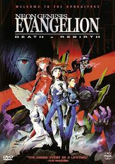

.jpeg)


¡Bienvenidos a AnimeVerse, donde la pasión por el anime cobra vida! 🌟
Aquí encontrarás todo lo que necesitas para explorar, descubrir y disfrutar de las mejores series, películas y personajes del anime japonés.
Sobre Mi 🤖
| Poster | Nombre del Anime | Sinopsis | Fecha de publicación | Visualizar |
|---|---|---|---|---|
|  | Neo Genesis Evangelion | Neon Genesis Evangelion (新世紀エヴァンゲリオン Shin Seiki Evangerion), también conocida simplemente como Evangelion, o Eva, es una serie de animacion japonesa en la que historia de la obra se da lugar en un mundo futurista en el que una organización paramilitar llamada Nerv protege a la humanidad de los ataques de seres de origen y naturaleza desconocidos, los «ángeles», utilizando para ello bio mechas humanoides llamados Evangelion (acortado a Eva). A medida que avanza la trama, ésta se vuelve paulatinamente más confusa y psicológica, en donde las personalidades de los personajes se hacen cada vez más inestables y su desarrollo se torna fundamental. | 1995 (Finalizado) | |
|
Demon Slayer | Kimetsu no Yaiba (鬼滅の刃), también conocida bajo su nombre en inglés Demon Slayer es una obra sigue las aventuras de Tanjirō Kamado, un adolescente cuya familia fue cruelmente asesinada por un Demonio el cual convirtió a su hermana Nezuko en una de estas criaturas, obligando a Tanjirō a emprender un viaje para cazar a estos seres y de paso ayudar a su hermana a recuperar su humanidad. | 2019 (En emisión) | |
|
Dragon Ball Z | Dragon Ball Z sigue las aventuras de Goku, un guerrero Saiyajin criado en la Tierra, mientras protege al planeta y al universo de amenazas cada vez más poderosas. La historia comienza con la revelación de su origen alienígena y su enfrentamiento contra enemigos como los Saiyajines, los androides, y el tirano galáctico Freezer. A lo largo de la serie, Goku y sus amigos, incluyendo Vegeta, Gohan, Piccolo, y Krillin, enfrentan desafíos que ponen a prueba su fuerza, ingenio y lealtad, desde la llegada de villanos como Cell y Majin Buu hasta épicas batallas intergalácticas. | 1989 (Finalizado) | |
|
Fullmetal Alchemist: Brotherhood | Edward y Alphonse Elric, hermanos alquimistas, buscan la Piedra Filosofal para restaurar sus cuerpos después de un experimento fallido. Su viaje los llevará a enfrentarse a conspiraciones gubernamentales y descubrir oscuros misterios sobre la alquimia. | 2009 (Finalizado) |